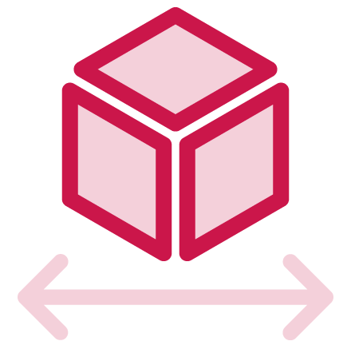

de 4 à 7 collaborateurs : évoluer sans changer de local
Cas pratique n°1 : une agence de conseil
de 4 à 7 collaborateurs

100m² optimisés
120K € d'investissement
Vannes (56)
levier de croissance et bien-être interne
80% des pertes d'espace sont dues à des habitudes non questionnées
La première étape est de prendre conscience de vos habitudes : Identifiez vos usages, vos blocages et ce qui vous freine. Comment évoluez vous quotidiennement dans votre espace ?
Je ne sais même pas par où commencer, a force d'être ici tout les jours, je ne vois plus ce qui fonctionne ou non ...
Mon regard extérieur sert à ça ! On va révéler le potentiel du lieu et en faire un véritable outil de croissance.
La circulation est compliquée et actuellement on se marche les uns sur les autres ... Des idées pour l'ambiance générale ?
On va soigner l'accueil, la lumière, l'acoustique et le stockage ! Un aménagement bien pensé, c'est plus de confort, plus d'impact et plus de rentabilité.
Il s'agit d'un ERP, il y a des normes ou contraintes spécifiques non ?
Exactement, il y a plusieurs contraintes à prendre en compte pour l'accueil du public, l'accessibilité et la sécurité incendie. Je vous montre ce que ça peut devenir ?
un espace bien conçu augmente jusqu'à 30% les interactions entre collègues
La phase conception doit explorer l'ensemble des possibilités. Mais pour batir un projet, attention, il ne s'agit pas seulement de penser "déco" en premier :
Il faut constament faire l'aller-retour entre technique et créativité, entre visible et invisible, entre envies et budget.
Réinventer ses bureaux, ce n'est pas juste déplacer des murs, c'est repositionner toute une culture d'entreprise. 1 collaborateur sur 2 considère que l'aménagement influence directement son efficacité.
Mon objectif : vous emmener là où vous n’auriez jamais pensé aller
Se détacher, prendre du recul et exploiter toutes les possibilités
On tient quelque chose ! Le plan me plait mais j'ai envie d'en savoir plus !
Génial ! On va paufiner ensemble chaque détails
Pensez l'aménagement intérieur comme levier de croissance
Chaque m² des bureaux Morphos a été étudié pour révéler la surface existante. En créant des zones collectives et collaboratives, les synergies d'équipe ont doublées Attention tout de même à préserver l'intimité de chacun avec des zones de respiration Et si vous avez des contraintes avec votre budget, optez pour la simplicité :
Valorisez la lumière : on a maximisé les surfaces ouvertes et vitrées Jouer avec les usages : on a travaillé avec du mobilier mobile et des rideaux acoustiques Et surtout, amusez vous : racontez vos couleurs et donnez du caractère au lieu
dans les bureaux, Un bon design d'intérieur augmente la productivité de 78%
Franchement, je suis bluffé ! Mais il y aura forcément des écarts avec la réalité non ?
Justement non ! Chaque élément que vous voyez dans le visuel prendra place dans votre futur espace On choisi ensemble les matériaux, le mobilier, la lumière ... rien d'aléatoire
Parfait, j'ai un coup de coeur sur l'ambiance globale ! Mais côté budget, on s'en sort comment ?
C'est aussi prévu, pendant que l'on valide les ambiances et choix de matériaux, je dessine tous les plans techniques nécessaires pour consulter les artisans et obtenir leur devis.
73% des commerçants voient leurs chiffres d'affaires augmenter après rénovation
Chaque choix doit faire ressortir votre identité et les couleurs de votre marque
Excellent ! C'est exactement les couleurs de la charte graphique !
Un projet réussi, c'est d'abord une cohérence d'ensemble
Chaque éléments compte : matériaux, mobiliers, éclairages, textiles ... Rien ne doit être ajouté "parce que c'est joli", mais parce que ça a du sens.
A chaque choix, posez vous la question "pourquoi cet élément ?", "quelle est sa fonction, sa valeur ajoutée ?" Quelques exemples concrets : 🔸Un sol pvc à l'entrée facilitera l'entretien d'un passage fréquent 🔹Une moquette dans un espace ouvert réduira le bruit ambiant 🔸Des fauteuils et des rideaux en textile apportera de la profondeur tout en absorbant le son Tous ces choix doivent être discutés et mis en commun pour garantir une efficacité quotidienne
la différenciation se joue en 5 secondes :
vous n'aurez pas deux fois l'occasion de faire une première bonne impression
L'important est de s'assurer que ce qui est prévu dans chaque devis correspond à la conception prévue En fonction du budget, on ajustera les éléments Par exemple, des étagères en MDF à peindre seront surement moins cher qu'en stratifié !
Oui, très bonne astuce, je préfère prioriser le budget sur les éléments essentiels
Vous pouvez m'aider sur les déclarations administratives liées à l'ERP ?
Bien sûr ! Je constitue les notices et dossiers techniques spécifiques aux ERP et je les transmets au service urbanisme. Pas de temps à perdre, le délai d'instruction peut aller jusqu'à 4 mois !
Et après ?
Place au chantier !
travailler sans déclaration en ERP ? amendes et fermeture administrative possible
Votre métier n'est pas de jongler avec les normes ERP, le mien si
vous êtes à une réunion près de faire évoluer vos bureaux
Mais vos m² ne suivent plus ...
Je vous propose une rencontre, un audit express et sans engagement de vos locaux pour : 🔸Faire parler vos espaces 🔹Diagnostiquer les freins invisibles de votre quotidien 🔸Projeter les possibilités et traduire vos ambitions